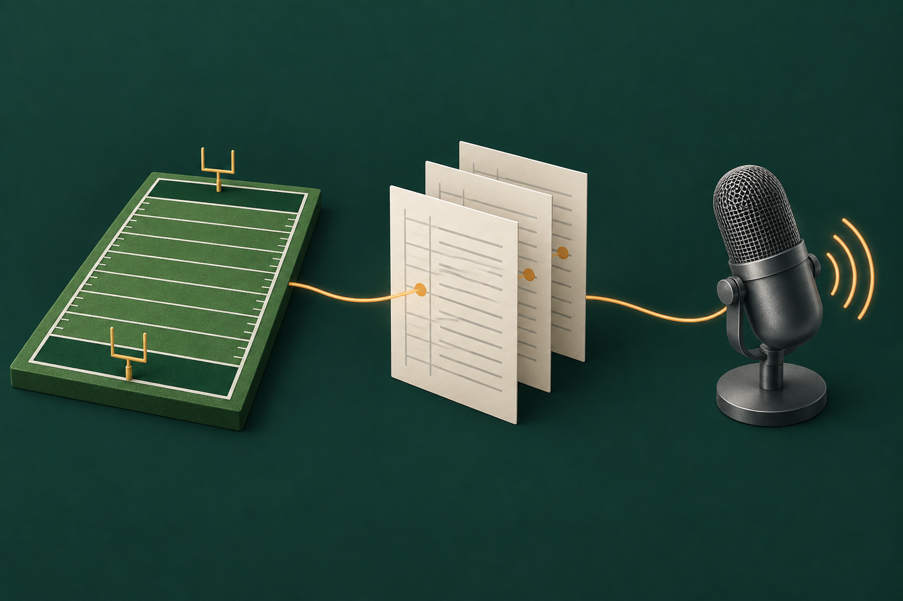

Confirm the first play.
The drive opens with a six-yard run. The replay confirms it.
Work Gridiron
Gridiron · Game commentaryCommentary for a football video game can run ahead of the facts and celebrate a play a flag has already wiped out. Gridiron writes each play into a record first, and the commentary is meant to work only from that record.
Public source · research snapshot frozen September 19, 2026, free to download
Confirmed
Too small to call, so no line.
Voided
A no-play. The score stays 0 to 0, and nothing is said.
Confirmed
One line: "Touchdown!"
Saved replay output From the replay run on September 19, 2026.
Commentary that runs ahead of the facts can celebrate a play a flag has already wiped out, or call the same play twice. So Gridiron splits the job in two.
The first part, the event reconciler, works out what happened and writes each play to the ledger, the one agreed record of the game. Only then does the second part, the producer, get a turn to decide whether to speak.
For a score, the producer uses a fixed reaction line such as "Touchdown!". Other lines are built from fixed templates filled with a packet of supporting facts. A claim guard then rejects any line that names a player or a number those facts don't support.
When a language model is set up, it writes from the same facts. It never decides what happened in the game.

Take in what the game shows on each play.
Work out what happened and write it to the ledger.
Speak from the recorded play and its facts.
The sample drive has three plays. For each one, the answer key (a script of what should happen) sets the expected status, and the replay records what Gridiron decided.
The drive opens with a six-yard run. The replay confirms it.
The next play, a pass, draws a flag and becomes a no-play. It stays in the record as voided, and the score stays 0 to 0.
The drive ends with a confirmed touchdown, and the producer answers with its fixed reaction line.
The replay ran twice from the command line on September 19, 2026, on the same made-up drive. Both runs wrote exactly the same record.
Saved results from the two runs. The switch only changes which saved results you see; nothing runs in your browser.
The statuses and the number of plays matched the full answer key, and no play was recorded twice. To show the two records are identical, the replay prints a fingerprint of each: a 64-character code (a SHA-256 hash) computed from the exact contents of the record. Change one detail and the code changes completely.
3229305cb6a0f7ac6e7d6e9f7b27ca04b791cb9e2ca65a2e44c6eb0162c0d4bbThe replay command in the download prints this fingerprint, so you can rerun it and compare.
A replay that repeats perfectly can make a report look convincing about things nobody measured.
So before the snapshot was frozen, AI tools fixed the report to show no value for anything never measured. Those fields stay empty on purpose and carry a NOT_MEASURED label with a reason. A claim that the replay matched the answer key needs a complete answer key.
Four tests now reject a report that claims accuracy nobody measured, checks against a partial or missing answer key, or counts a different number of plays than the key. The report makes fewer claims, and a reviewer can see which conclusions it supports.
The download is the research snapshot itself. It runs the replay without the game, a real save, a model account or model weights. With uv, Python 3.12 and Node.js installed, the quick start in its README reruns the replay.
Research prototype · snapshot frozen September 19, 2026 · GPL-3.0-or-later declarations retained · 194 packaged files. It is for local research, with no hosted service or support guarantee.
A safety boundaries document rules out injecting code into the game, reading its memory, getting around anti-cheat and changing a save. The bridge's read-only test fails if any of the known save-writing calls appears in its source.
The package holds no game saves, captures, announcer recordings, model weights or private development history. Optional integrations have their own upstream terms.
Gridiron is an unofficial fan project. It is not affiliated with or endorsed by Electronic Arts, EA SPORTS, the NFL, the NFLPA, any broadcaster or any announcer.
I decide what each project is for and check what comes back. For Gridiron I wanted an event record the commentary can rely on, and one public replay anyone can rerun.
AI tools write the code. For Gridiron that covers the backend, the save-file reader, the dashboard and the tests. An AI agent also did the dependency research recorded in the archive's research ledger.
These ran on September 19, 2026, against a fresh copy of the snapshot in an isolated Windows environment, as the archive's status file records.
| Check | Passed |
|---|---|
| Python tests | 38 |
| Bridge tests | 2 |
| Web tests | 3 |
| Browser test, from setup through a replay | 1 |
| Tests in total | 44 |
Formatting, lint, the Python and TypeScript type checks and the web build passed. Locked installs passed too, with every dependency at the version pinned in the lockfiles. So did a check that the 20 generated data-format files match a fresh export byte for byte. A secret scan and a private-file scan also passed.
| Measure | Recorded |
|---|---|
| Plays recorded / expected | 3 / 3 |
| Plays recorded twice | 0 |
| Statuses and play count match the answer key | Yes, against a complete answer key |
| Lines of commentary | 1, "Touchdown!" |
| Screen-reading accuracy | NOT_MEASURED: the replay feeds in made-up observations |
| Commentary accuracy | NOT_MEASURED: no independent checker was run |
| Replay result label | VERIFIED for the made-up replay; UNVERIFIED for the live game |
The one line of commentary, "Touchdown!", is the producer's fixed reaction to a score, so the claim guard had nothing to check in this replay. The archive's own tests check the guard separately.
The archive's limitations file says what it would take to find out whether Gridiron holds up against a live game: a private set of at least 50 labeled plays to check how well it reads the screen, and one complete offline game, run and reviewed.
The download has its own fingerprint, and it is the one the annotated drive record names as its source:
48f5573e460871d6eb144461b668422f7057fbdebcb0589cbbc69400dfd32658The Gridiron archive keeps its own GPL-3.0-or-later declarations and notices, and third-party components keep their own terms. The illustration on this page is conceptual artwork made with OpenAI image generation.